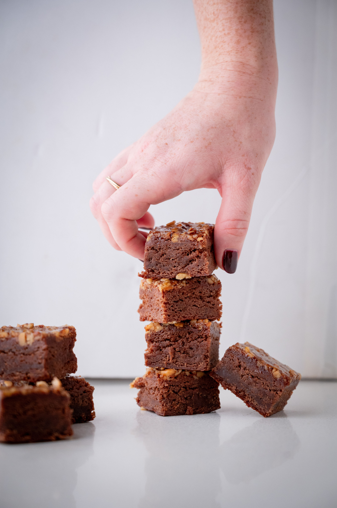
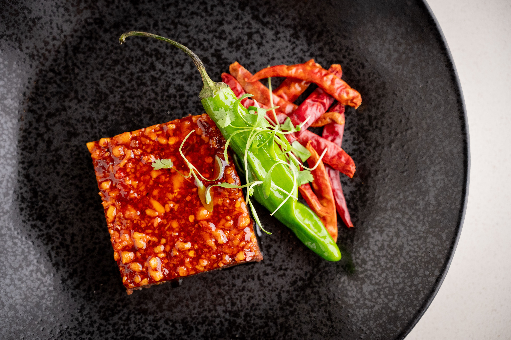
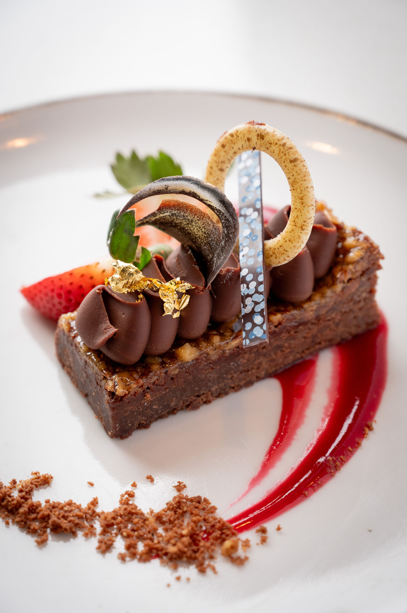
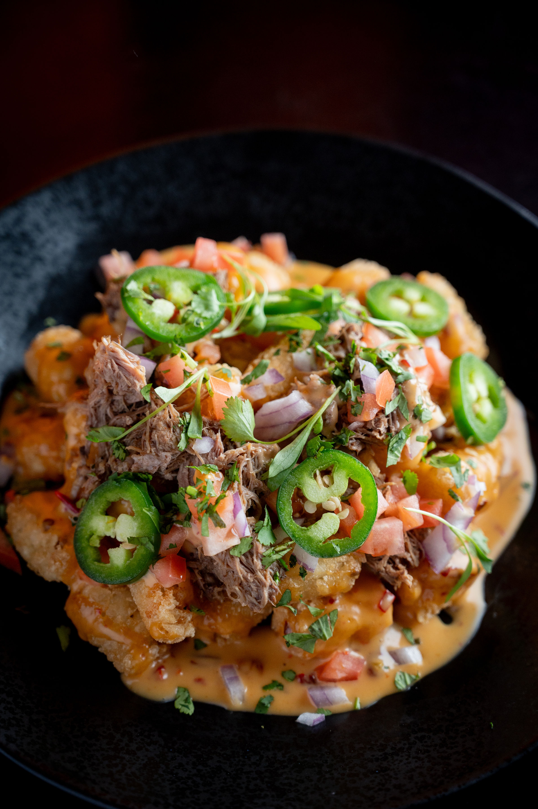
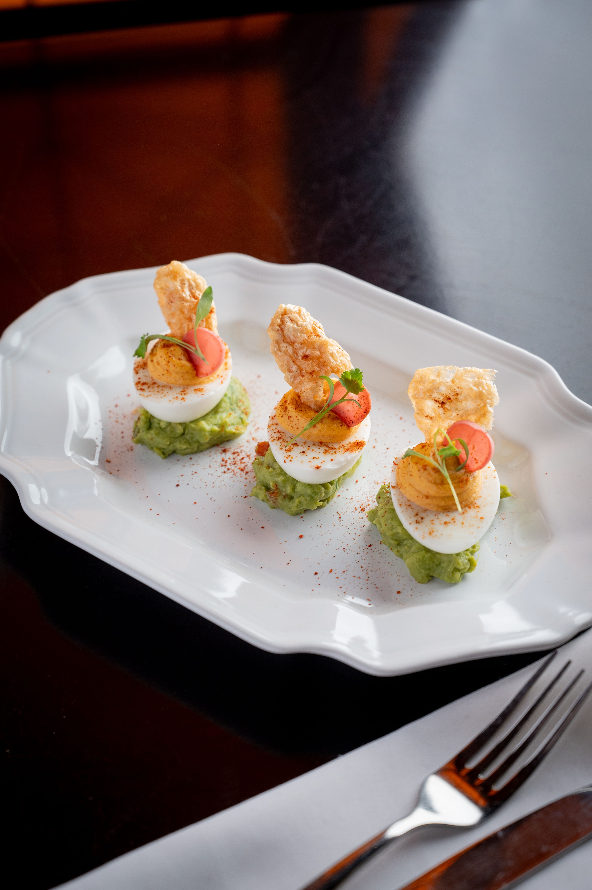
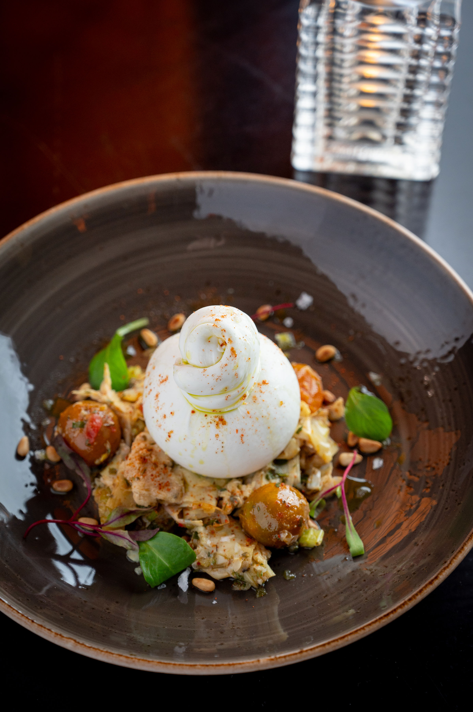

Scott Chef's portfolio showcases a commitment to creativity, quality, and seasonality, highlighting dishes that celebrate the freshest ingredients at their peak. From vibrant, farm-to-table salads and carefully crafted entrées to indulgent, artfully plated desserts, each creation is designed to delight both the eye and the palate. Entrées range from perfectly seared proteins to plant-based innovations, each paired with thoughtfully prepared sides that complement the main flavors. Desserts reflect the season’s bounty, combining classic techniques with modern twists to create memorable, flavorful finales. This portfolio reflects a culinary philosophy that balances innovation, elegance, and approachable flavors, making every dish a testament to the chef’s passion and expertise.